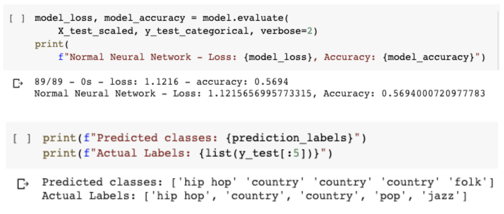
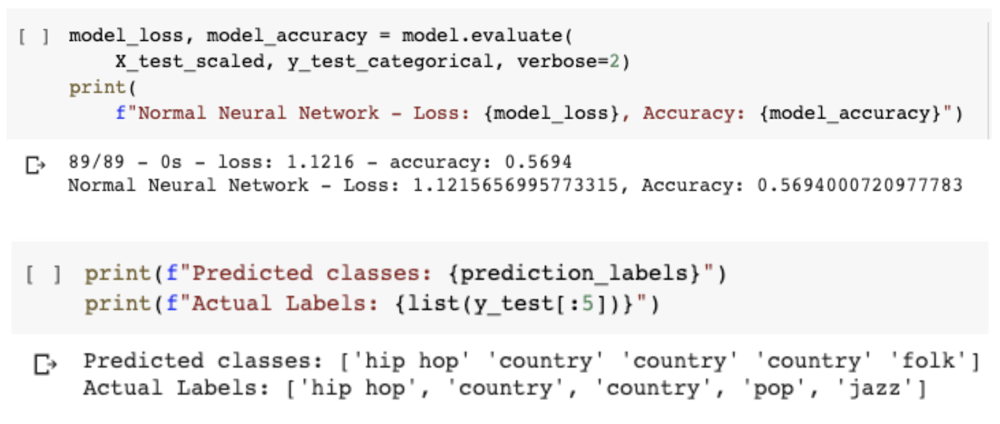

There were variety of issues with the gathered datasets considered before the cleaning process in order to determine which features and values need to be extracted or removed. Some of the limitations of our datasets are expalained below.
Spotify
The data cleaning process for the spotify dataset includes:
- Genre Selection - Spotify API Request
- Track Information - Spotify API Request
- Audio Features - Spotify API Request


AZLyrics
The data cleaning process for the AZLyrics dataset includes:
- Drop duplicates and NA values.
- Standardize artist names to match names from Spotify dataset.
- Remove songs with invalid and non-english lyrics.
- Merge lyric dataset with Spotify dataset on artist and song name to obtain genre.
- After the merge, only about 7,000 songs remain with 90 genres.
- Stopwords retained for more accurate model after testing.

 
